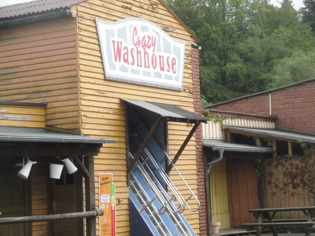
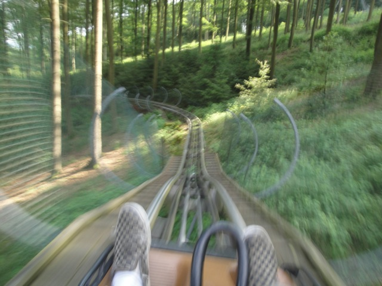

Fort Fun is a fun little small park that nobody talks about. But once you visit the park, you realize that this place KICKS ASS!!! No, seriously. Fort Fun is an awesome little park. That may seem weird as this park doesn't really have too much going for it. There aren't a ton of rides and the roller coasters that it does have, aren't that impressive. Roller Skater? Corkscrew? This seems more like a credit whoring stop. Well let me tell you something. This place is NOT for the credits. You get those and all is done. The real fun just comes from the other rides, and honestly, just the atmosphere of the place. This place has a GREAT atmosphere. It just seems like a great place to go and have a great time. Hell, in a really weird kind of way, the park almost reminds me a little bit of Knoebels. Yeah, I know there's no Top 10 Coasters here or anything crazy and along those lines. But it's still a really fun park and though the vast majority of the rides may be just simple and ordinary rides, they are run to their full potential. And on top of that, there are a couple of really interesting and unique rides that don't look to special, but are just a ton of fun at the park. I know that this place is a really popular ski resort in the winter, but definetly make sure to check this place out in the summer as well. Trust me, you will have a great time at this park.
Here are the reviews of all the Flat Rides at Fort Fun. Now the flat ride collection at this park is...ok. But it could be better. I know when I was at the park, they had a Magnum, which is interesting as I had thought that that ride only was avaliable at county fairs, but it was here. And apparently since I last visited, they tore down the ride and replaced it with something else that I don't feel like researching. Which is a bummer because those are really fun rides. All right. The only other flat ride really worth talking about would be Dark Raver. Again, this is one of those rides that normally isn't worth talking about other than the fact that it exists. Cause yeah. This ride is just a Round Up. I know. How riveting. But I didn't know that when I rode it. From the outside, you have no idea what it is cause yeah. It's an indoor ride. And then, WOW!! These rides are just so much better inside. Plus, it's all in the dark and it feels trippy. Aside from that, it's pretty standard. They have a pirate ship, some chairswings, a ferris wheel, and a couple car rides.
There's no contest here. Best Round Up by far.
Dark Rides
Fort Fun doesn't really have much of a dark ride collection. Cause in a sense, there aren't really proper dark rides at the park. However, we at Incrediblecoasters count walk throughs and fun houses as dark rides. Sort of. I guess. Moving on because they really are good attractions. First off, let's deal with the actual dark ride with a track and is something you actually ride. The Secret Stage of Horror. It's sort of like a haunt maze, except it's in a dark ride form. The scares aren't actually scary and it seems far more goofy. Come on. Have Antonio come over there. He'll show you how to make the ride scary. Now let's move onto the fun house. Crazy Wash. There's something about that fun house that's just...really good. It's not special, but I just had a blast inside. Maybe it was the friends I was with, but it's just a lot of fun. Oh, and there is another fun house walk through. But it's not just a walk through. In fact, it's actually the line for Devil's Mine. Yep. The line for the Roller Skater is a fun house. Easily the best line ever. So in a weird way, the line for Devil's Mine is a dark ride. Yeah, this is why the classification is problematic. But f*ck it!! I love it!! Check em out and have some fun in these fun houses.

Sadly, there is no Roller Skater at the end of this Walk Through.
Water Rides
All of the water rides at Fort Fun sort of fall into that same category of not crazy, but a ton of fun, and also kind of unique. Or at least that's the case with their log flume. When you look at it, it looks fun, but not too crazy. It looks level, low to the ground, and just an interesting and fun ride. But that's not showing the part you can't see. Yep. There's an underground section to this ride. And it has a drop. And it is AWESOME!!! And apparently there is a rapids ride at the park. I'm not sure if it existed when I visited the park and I just didn't know about it, or if it's a new addition to the park. Either way, from the photos I've seen of it, it looks pretty good. And knowing how much I liked the log flume, I belive that it's going to be a good ride.
Fun Above Ground Drop.
Dining
It's sort of weird for me to comment on the food at Fort Fun because my experience is...not helpful to the park review. You see, I had a private BBQ when I visited the park. And yeah. You're almost certainly not going to get that if you're heading out to Fort Fun. So what I'm saying about the food won't help you. I'm not sure if the food they served at the BBQ is of the same quality as what they sell to the guests. All I can say is that I hope so, because the stuff at the BBQ is F*CKING AWESOME!!! No seriously. The food at that BBQ is just AWESOME!!! I LOVED the Bratswurth, and I know some people weren't big on it, but I LOVED that bacon, even if it didn't look like any bacon I've ever eaten. Combine that with great German Beer and some Mezzo Mix, and it is just an awesome and fantastic meal. I swear to god. If the park served their food like this for the public, then Fort Fun would TOTALLY land a spot on our Top 10 Theme Park Dining Options List. So I'm just hoping that if I go back, then I'll be able to get some great Bratswurth and some more of that meat that's called bacon, but doesn't look or taste like bacon, but who cares because it's f*cking great.
I REALLY hope that I can find food like this for the public at Fort Fun, because this is AWESOME!!!
Theming and Other Attractions
Here are the reviews of all the other stuff at Fort Fun. As for the theming, there's really not much. In fact, I'd almost call it bare. But as for setting, Fort Fun has a pretty good one. It's nestled right in the middle of those German Mountains, and if you want to get to the park, then you have to drive through these sort of German Villages that look like something out of a storybook. No really, it is just a really nice setting. But we haven't even talked about the star attraction of the park yet. I know that's a shock. But hey. Let's talk about Trapper Slider. The park's Alpine Coaster. Yes, this ride is F*CKING AWESOME!!! No, this ride is NOT A CREDIT!!! But enough about the debate whether Alpine Coasters count as credits (they don't). This is just one of the best Alpine Coasters out there. OK, maybe not the best per se, but it is awesome. The setting it's in is awesome, and it has a ton of curves and bumps, where if you're not braking and riding like a wuss, you'll go crazy. It's just a totally fantastic ride. And if you want a great view of those mountains, then you should do the Zipline, Wild Eagle. Yep. They have one of those here. I know a lot of people are really scared of that thing, but nah. As someone who cliff jumps, I just can't be afraid of this. But hey, not only is it a ton of fun, but I really think that the view you get is just fantastic. It's very out there, and once you're above the park, looking out, you can really see just how isolated this park really is. This place is NOT around other stuff. Aside from that, the other fun stuff at Fort Fun would be a bunch of playgrounds and slides. And these aren't just dinky little playgrounds and itty bitty slides. No, you FLY down these things. It is just GREAT!! I LOVE these things and really wish that playgrounds in America could be like that. =)

Yes. The ride is as fast as the blur is suggesting.
In Conclusion
Fort Fun is a FANTASTIC little theme park. Even if you just dismiss it as a crappy little credit whoring park, you will most certainly change your mind and your attitude after actually visiting the park. While it may not have the best coasters, this place is not about the coasters, or even the rides. Though I will admit that it does have some fun rides including a really fun Alpine Coaster and a really nice Zipline. But mainly, this park is just a fun place to relax and have a good time. The rides they have are not only fun, but fairly unique. Maybe not incredibly unique, but they do have some custom rides, a lot of rare rides, and some stuff that you normally wouldn't see in your average theme park. Maybe to a European, it all seems far more normal and common, but in the United States, there are not a lot of places like Fort Fun. It's just one of those charmer parks, that doesn't look that great on the outside, but once you get inside, it's just a really nice and enjoyable place. So if you have a lot of time in Germany and enjoy these wacky screwed up parks, then don't forget to check out Fort Fun.
Enthusiast FAQs.
*Are there kiddy coaster restrictions? - No. Marienkaferbahn has no restrictions for adults.